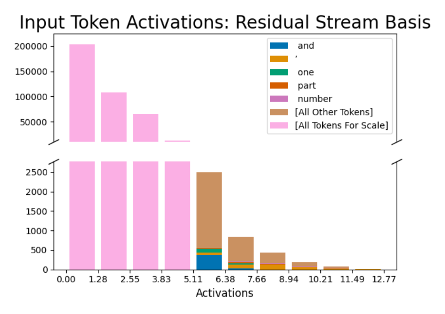

Default-basis dimension resembling the apostrophe feature

Reading the two-panel histogram
Both panels bin the same quantity — how strongly a single coordinate of the residual stream's default (neuron) basis activates — over every token occurrence in the sample, with x-axis activation magnitude from 0 to about 12.8. Bar height is a token count; colored segments split each bin's count by the specific token responsible ('and', an apostrophe, 'one', 'part', 'number'), with '[All Other Tokens]' as a catch-all and a pale '[All Tokens For Scale]' bar repeating the bin's total for reference. The two panels share x-axis bins but use different y-scales: the top panel (0 to 200,000) shows how the low-activation bins dwarf everything else, while the bottom panel is a rescaled zoom (0 to about 2,700) that reveals the composition hidden by that scale. Reading only the top panel, or only the highest bins, misses the story.
What the histogram shows
In the zoomed bottom panel, the middle bins (roughly 5.1 to 6.4 activation) hold on the order of 2,500 tokens, composed mostly of the 'All Other Tokens' catch-all with only small slices of 'and', 'one', and other labeled tokens — not apostrophes. Only in the higher bins, where total counts have already fallen to a few hundred or fewer, does the apostrophe segment become a visually larger share of a shrinking bar. This dimension was chosen because, among the residual-stream coordinates the dictionary's apostrophe feature reads from most strongly, it was the highest-ranked one whose own top activations include apostrophes — the 10th-highest such coordinate by that ranking (sparse-autoencoders, §"D.1 RESIDUAL STREAM BASIS", p. 16).
Contrast with the dictionary feature
The point of the figure is contrastive: this Default (neuron/residual-stream) basis baseline coordinate of the Residual stream looks like an apostrophe detector only if a reader looks solely at its highest-activation bin; across the fuller activation range it fires on many unrelated tokens, the textbook picture of Polysemanticity. That is unlike dictionary feature 556, which activates on apostrophes almost exclusively and is the paper's case study in Monosemanticity (Apostrophe dictionary feature (feature 556)); the top-weighted dimensions this basis draws on are themselves Outlier dimensions, further complicating any claim that a single default-basis coordinate is meaningful on its own.